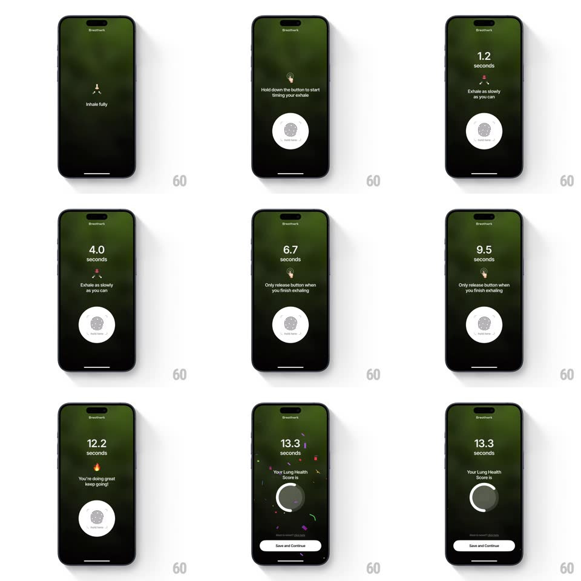

Media
Frame-by-frame

Rebuild this interaction 1:1: Breathwrk's hold-to-exhale lung test - hold the fingerprint button while exhaling as slowly as possible, a seconds timer counts up with encouraging captions, then release triggers confetti and an animated circular lung-health score.

Rebuild this interaction 1:1: Breathwrk's hold-to-exhale lung test - hold the fingerprint button while exhaling as slowly as possible, a seconds timer counts up with encouraging captions, then release triggers confetti and an animated circular lung-health score.
## Integration
Integration: stack-agnostic spec - springs given as stiffness/damping, timed motions as duration + curve; map every value to your framework and animation library of choice.
## Scene
Dark green screens: "Inhale fully" with a lungs glyph, then instruction "Hold down the button to start timing your exhale" above a white circular fingerprint button. During hold: large seconds counter ("5.2 seconds"), phase caption ("Exhale as slowly as you can", "Only release button when you finish exhaling", "You're doing great keep going!" with flame). Result: confetti, "13.3 seconds - Your Lung Health Score is", circular progress ring, Save and Continue pill.
## Motion spec
Pattern: press-and-hold measurement with staged feedback.
- Fingerprint button idles with a soft pulse (scale 1 -> 1.04, 1.8s loop); on touch-down it compresses (scale 0.94, 120ms) with haptic.
- While held: the counter ticks up in 0.1s steps, digits crossfade on each second (150ms); the button's ring fills slowly clockwise as a breath gauge.
- Captions rotate by elapsed time (each fades 250ms): exhale instruction -> release warning (~8s) -> encouragement (~11s).
- On release: button springs back (spring ~300/18), confetti bursts from the top (gravity, ~1.2s, mixed colors), the counter holds, and the lung-health ring draws from 0 to the score (trim 0 -> ~0.75, 900ms ease-out) below it.
- Save and Continue slides up + fades in last (300ms, 200ms after the ring finishes).
## Calibration
- The counter only runs while the finger is down - early release ends the test immediately.
- Confetti and ring start together; the score counts with the ring draw.
## Reduced motion
No confetti; ring fills with a linear wipe.
## Don't miss
- The flame emoji encouragement appears only past a good threshold (~10s) - staged rewards.
- The fingerprint icon stays visible inside the pressed button the whole hold.